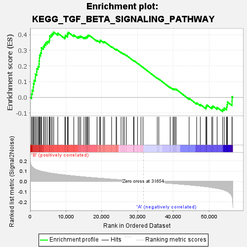
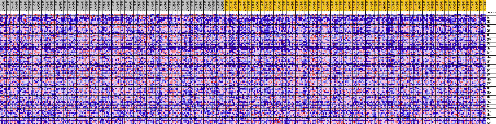
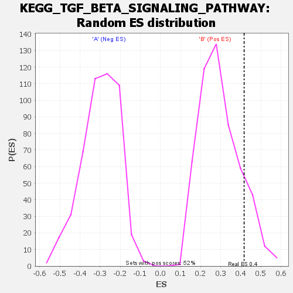

| | | Dataset | my.my.cls#B_versus_A.my.cls#B_versus_A_repos |
| Phenotype | my.cls#B_versus_A_repos |
| Upregulated in class | B |
| GeneSet | KEGG_TGF_BETA_SIGNALING_PATHWAY |
| Enrichment Score (ES) | 0.41629386 |
| Normalized Enrichment Score (NES) | 1.4101484 |
| Nominal p-value | 0.13051823 |
| FDR q-value | 0.52860135 |
| FWER p-Value | 0.857 |
Table: GSEA Results Summary

Fig 1: Enrichment plot: KEGG_TGF_BETA_SIGNALING_PATHWAY
Profile of the Running ES Score & Positions of GeneSet Members on the Rank Ordered List
| SYMBOL | TITLE | RANK IN GENE LIST | RANK METRIC SCORE | RUNNING ES | CORE ENRICHMENT | | 1 | THBS3 | na | 399 | 0.150 | 0.0212 | Yes |
| 2 | ID2 | na | 566 | 0.143 | 0.0452 | Yes |
| 3 | BMP7 | na | 867 | 0.133 | 0.0649 | Yes |
| 4 | INHBB | na | 942 | 0.131 | 0.0884 | Yes |
| 5 | NODAL | na | 1120 | 0.127 | 0.1091 | Yes |
| 6 | TGFB2 | na | 1457 | 0.120 | 0.1258 | Yes |
| 7 | TGFB1 | na | 1477 | 0.120 | 0.1480 | Yes |
| 8 | TGFB3 | na | 1848 | 0.114 | 0.1628 | Yes |
| 9 | BMP4 | na | 1865 | 0.113 | 0.1839 | Yes |
| 10 | BMPR2 | na | 2212 | 0.109 | 0.1982 | Yes |
| 11 | THBS2 | na | 2491 | 0.106 | 0.2132 | Yes |
| 12 | SMAD7 | na | 2522 | 0.105 | 0.2325 | Yes |
| 13 | CHRD | na | 2573 | 0.105 | 0.2513 | Yes |
| 14 | INHBE | na | 2646 | 0.104 | 0.2696 | Yes |
| 15 | INHBC | na | 2916 | 0.101 | 0.2839 | Yes |
| 16 | DCN | na | 3136 | 0.099 | 0.2987 | Yes |
| 17 | RBL1 | na | 3150 | 0.099 | 0.3172 | Yes |
| 18 | TGFBR2 | na | 3709 | 0.095 | 0.3251 | Yes |
| 19 | BMPR1A | na | 4000 | 0.092 | 0.3373 | Yes |
| 20 | ACVR2B | na | 4359 | 0.090 | 0.3479 | Yes |
| 21 | NOG | na | 4785 | 0.087 | 0.3567 | Yes |
| 22 | MAPK1 | na | 5290 | 0.084 | 0.3636 | Yes |
| 23 | INHBA | na | 5469 | 0.083 | 0.3760 | Yes |
| 24 | SMAD9 | na | 5482 | 0.083 | 0.3914 | Yes |
| 25 | ACVR1 | na | 5858 | 0.081 | 0.3999 | Yes |
| 26 | COMP | na | 6198 | 0.079 | 0.4087 | Yes |
| 27 | AMHR2 | na | 6586 | 0.077 | 0.4163 | Yes |
| 28 | PITX2 | na | 7724 | 0.071 | 0.4096 | No |
| 29 | ZFYVE16 | na | 9717 | 0.063 | 0.3862 | No |
| 30 | ACVRL1 | na | 9834 | 0.062 | 0.3959 | No |
| 31 | RBX1 | na | 10431 | 0.060 | 0.3966 | No |
| 32 | LTBP1 | na | 10459 | 0.060 | 0.4074 | No |
| 33 | CUL1 | na | 10646 | 0.059 | 0.4153 | No |
| 34 | CDKN2B | na | 12186 | 0.054 | 0.3982 | No |
| 35 | SKP1 | na | 13410 | 0.049 | 0.3858 | No |
| 36 | EP300 | na | 13769 | 0.048 | 0.3885 | No |
| 37 | THBS1 | na | 14121 | 0.047 | 0.3910 | No |
| 38 | RHOA | na | 15025 | 0.044 | 0.3833 | No |
| 39 | IFNG | na | 15482 | 0.042 | 0.3832 | No |
| 40 | GDF5 | na | 15741 | 0.042 | 0.3865 | No |
| 41 | GDF6 | na | 15998 | 0.041 | 0.3897 | No |
| 42 | SMAD2 | na | 16124 | 0.041 | 0.3951 | No |
| 43 | SMAD6 | na | 16458 | 0.040 | 0.3966 | No |
| 44 | BMP5 | na | 18684 | 0.033 | 0.3635 | No |
| 45 | SMAD4 | na | 19454 | 0.031 | 0.3557 | No |
| 46 | TGFBR1 | na | 19572 | 0.031 | 0.3594 | No |
| 47 | SMAD1 | na | 19578 | 0.031 | 0.3651 | No |
| 48 | SP1 | na | 20431 | 0.028 | 0.3554 | No |
| 49 | E2F4 | na | 20787 | 0.027 | 0.3543 | No |
| 50 | THBS4 | na | 22748 | 0.022 | 0.3238 | No |
| 51 | CREBBP | na | 24006 | 0.019 | 0.3051 | No |
| 52 | PPP2R1A | na | 24145 | 0.019 | 0.3062 | No |
| 53 | RPS6KB2 | na | 25385 | 0.015 | 0.2872 | No |
| 54 | SMAD5 | na | 25930 | 0.014 | 0.2802 | No |
| 55 | ID4 | na | 26291 | 0.013 | 0.2763 | No |
| 56 | RPS6KB1 | na | 26836 | 0.012 | 0.2689 | No |
| 57 | SMURF2 | na | 28887 | 0.007 | 0.2339 | No |
| 58 | BMP6 | na | 28931 | 0.007 | 0.2344 | No |
| 59 | ID3 | na | 28990 | 0.007 | 0.2346 | No |
| 60 | RBL2 | na | 29990 | 0.004 | 0.2177 | No |
| 61 | BMPR1B | na | 30947 | 0.002 | 0.2011 | No |
| 62 | ROCK2 | na | 31515 | 0.000 | 0.1911 | No |
| 63 | PPP2R1B | na | 35497 | -0.009 | 0.1225 | No |
| 64 | BMP8B | na | 35932 | -0.011 | 0.1168 | No |
| 65 | BMP8A | na | 39103 | -0.019 | 0.0643 | No |
| 66 | TFDP1 | na | 39895 | -0.021 | 0.0543 | No |
| 67 | ZFYVE9 | na | 40157 | -0.022 | 0.0537 | No |
| 68 | GDF7 | na | 40452 | -0.023 | 0.0528 | No |
| 69 | LEFTY2 | na | 40769 | -0.023 | 0.0516 | No |
| 70 | MYC | na | 44399 | -0.034 | -0.0062 | No |
| 71 | FST | na | 46491 | -0.041 | -0.0354 | No |
| 72 | MAPK3 | na | 47515 | -0.045 | -0.0451 | No |
| 73 | ACVR1C | na | 49086 | -0.051 | -0.0632 | No |
| 74 | ROCK1 | na | 49209 | -0.052 | -0.0556 | No |
| 75 | AMH | na | 49353 | -0.052 | -0.0483 | No |
| 76 | PPP2CB | na | 50714 | -0.059 | -0.0613 | No |
| 77 | TNF | na | 50996 | -0.060 | -0.0549 | No |
| 78 | E2F5 | na | 52210 | -0.068 | -0.0636 | No |
| 79 | PPP2CA | na | 53755 | -0.080 | -0.0760 | No |
| 80 | ID1 | na | 54203 | -0.084 | -0.0680 | No |
| 81 | SMURF1 | na | 54839 | -0.094 | -0.0616 | No |
| 82 | SMAD3 | na | 55016 | -0.097 | -0.0466 | No |
| 83 | LEFTY1 | na | 55107 | -0.098 | -0.0296 | No |
| 84 | ACVR2A | na | 56383 | -0.149 | -0.0241 | No |
| 85 | BMP2 | na | 56393 | -0.151 | 0.0040 | No |
Table: GSEA details [plain text format]

Fig 2: KEGG_TGF_BETA_SIGNALING_PATHWAY
Blue-Pink O' Gram in the Space of the Analyzed GeneSet

Fig 3: KEGG_TGF_BETA_SIGNALING_PATHWAY: Random ES distribution
Gene set null distribution of ES for KEGG_TGF_BETA_SIGNALING_PATHWAY